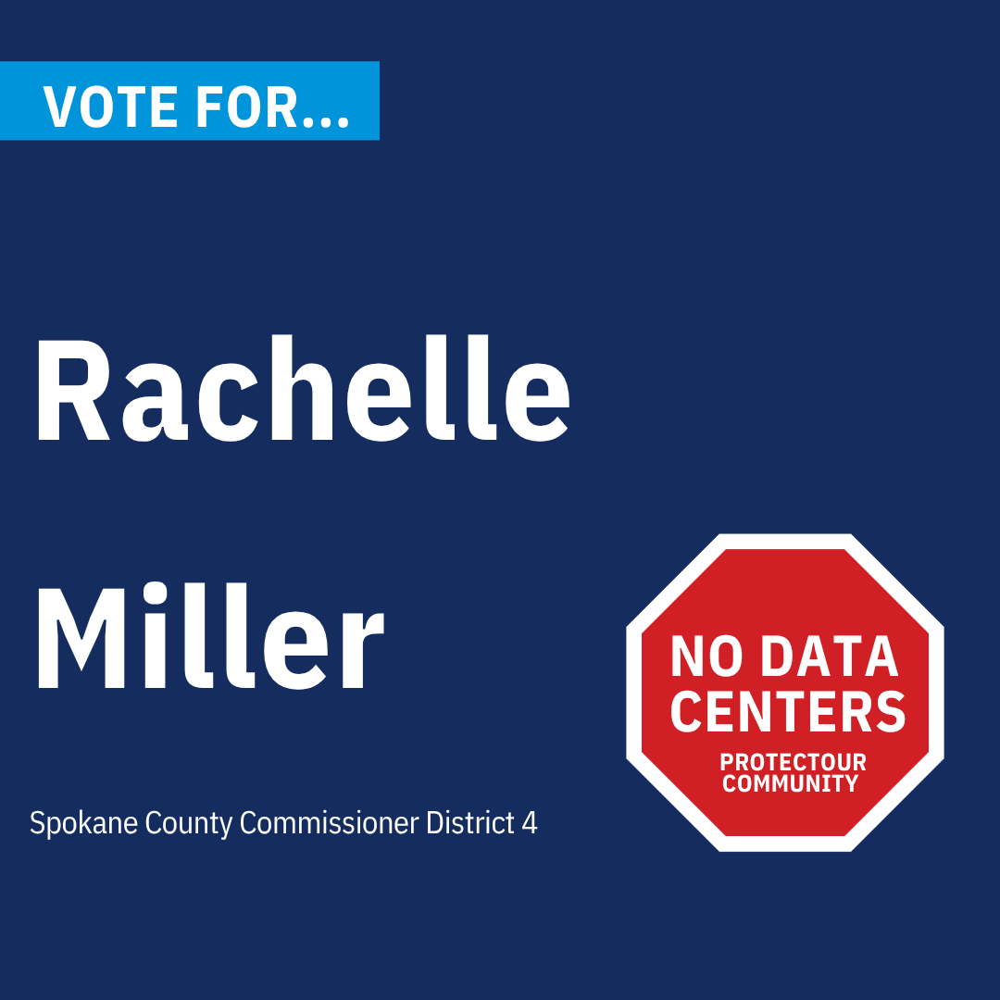
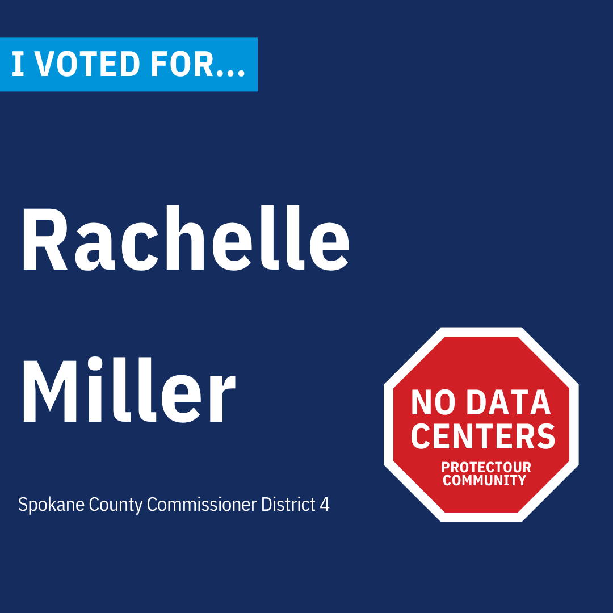
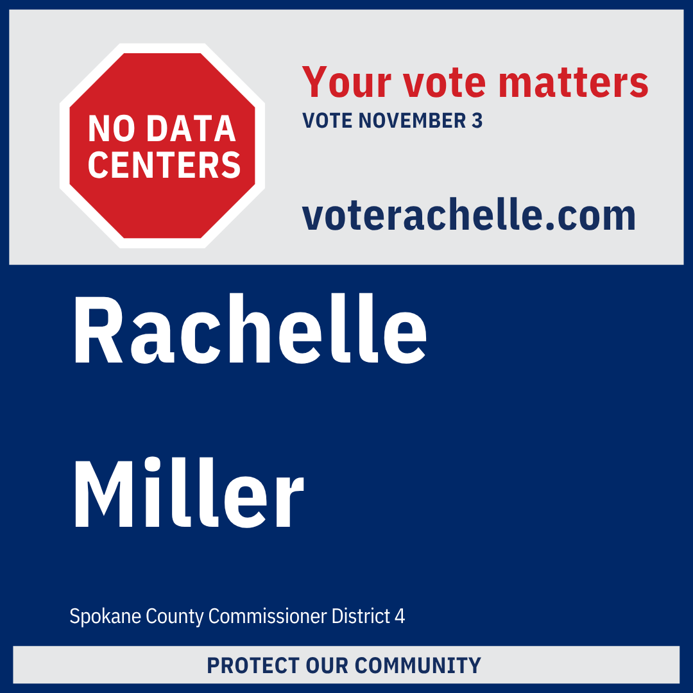
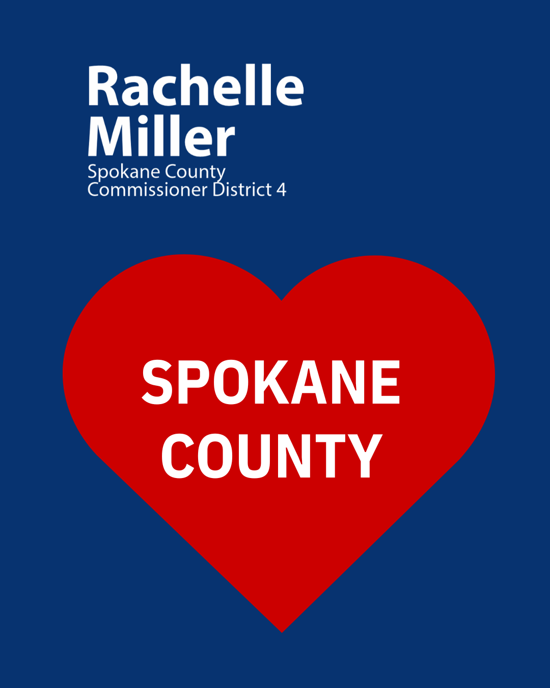
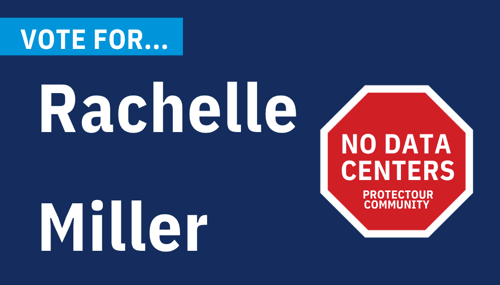

Independent Expenditure Notice: Independent expenditure committees and organizations must operate independently of the People to Elect Rachelle Miller campaign. Do not coordinate expenditures or communications directly with the campaign. For questions about IE compliance, consult your attorney or the Washington Public Disclosure Commission at pdc.wa.gov.
Spokane County Commissioner, District 4
Candidate: Rachelle Miller
Party: Independent
Race: Spokane County Commissioner, District 4
General Election: November 3, 2026
Campaign Committee: People to Elect Rachelle Miller
Website: voterachelle.com
PDC Registration: Washington State Public Disclosure Commission
About Rachelle Miller
Rachelle Miller is a Spokane native, Licensed Independent Clinical Social Worker, and small business owner running as an independent candidate for Spokane County Commissioner, District 4. She grew up in Spokane and is raising her family here — between hockey rinks and hiking trails, her kids are growing up in the same community she did. She is running to make sure it stays that way.
Over more than two decades, Rachelle has worked across mental health, education, and state and county human services at the intersections where systems either hold people up or let them fall through. As a parent of children with special needs, she has navigated those systems personally as well as professionally. She has helped draft and pass bipartisan legislation protecting parental rights in special education, and has been recognized as a disability rights advocate across Washington State. She has led region-wide teams through quality assurance and accreditation, helped clinicians develop their practice through the Internal Family Systems Institute, and earned multiple awards for leadership and innovation from the Washington State Department of Social and Health Services.
She has spent her career navigating bureaucracies on behalf of people who had no one else in their corner. She knows how institutions work, how they resist accountability, and how to make them answer for it anyway. That is exactly the skill set this race requires.
Short Bio (two sentences)
Rachelle Miller is a Spokane native, licensed clinical social worker, and small business owner running as an independent for Spokane County Commissioner, District 4. She has spent twenty years navigating institutions on behalf of people who had no one else in their corner, and she is running to bring that same accountability to county government.
One-Line Bio
Independent candidate for Spokane County Commissioner, District 4 — fighting to protect Spokane County's water, land, and power from unchecked corporate extraction.
What this campaign is about.
Spokane County is not for sale. Hyperscale AI data centers are coming for our water, land, and power — and the county commission has the authority to do something about it. The city passed an emergency moratorium. The county has not acted. Rachelle Miller is running to change that.
Closing line: No party sent me. No donor owns me. I will be YOUR county commissioner.
Key messages for supporters and advocates.
"While the public was learning about the Avista deal in June 2026, Commissioner Al French had already been meeting privately for over a year with Apricus Energy Partners, proposing a 1,000 megawatt AI data center on 514 acres on the West Plains. That community already has PFAS contamination in 57% of its private wells. The county has zero regulations covering data centers. The three Republican commissioners blocked a moratorium. The Republican candidate in District 4 has said nothing. Rachelle Miller is running to change that."
"The Spokane Valley-Rathdrum Prairie Aquifer is the sole source of drinking water for more than 500,000 people across two states. It is also the water source for Spokane County farms and ranches. A single hyperscale AI data center can consume millions of gallons daily. When the water table drops, small producers lose first."
"The Spokane City Council passed an emergency moratorium on data centers. The county has no such protection. A corporation blocked from the city doesn't go away — it looks for the next available site in unincorporated Spokane County. That's where the commissioner's authority matters."
"The news about the 500-megawatt power request broke after the filing deadline. The county commissioners said nothing. Someone had to step in. If she receives 1% of the general election vote, she is on the November ballot. That is not a long shot. That is a plan."
"No party sent her. No donor owns her. She answers to Spokane County residents — not to a party platform, not to a donor base, not to the corporations lining up to extract from our community."
"Spokane County is facing a nearly $30 million deficit. Not because residents are not paying enough. Because the state keeps adding expensive mandates while capping the county's ability to raise revenue. The state funds only 4% of indigent defense costs. New public defense standards will cost the county $15 million more a year with no state funding attached. Spokane County residents are stretched thin. The answer is not more taxes. The answer is accountability and fighting Olympia when it dumps unfunded mandates on county taxpayers."
"Spokane County needs action on affordable housing, an honest accounting of the jail and public defense system, and county dollars that actually reach people dealing with the opioid crisis and homelessness. Rachelle knows how institutions dodge accountability and how to make them answer for it."
Verified figures for use in communications.
500 megawatts — the amount of power an unnamed corporation sought from Avista, equal to half the power used by all homes and businesses in Spokane County. Disclosed in a federal securities filing, not at a public hearing. (Source: Spokesman-Review, June 3, 2026)
500,000+ — people who depend on the Spokane Valley-Rathdrum Prairie Aquifer as their sole source of drinking water across Spokane County, WA and Kootenai County, ID. EPA-designated Sole Source Aquifer since 1978. (Source: Spokane County, USGS)
5,000+ — community reports filed with Erin Brockovich's nationwide data center tracker in one week, documenting water, power, noise, and infrastructure concerns.
August 4 primary results — Rachelle Miller cleared the 1% threshold needed to appear on the November 3 general election ballot. Results are pending official certification by the Spokane County Canvassing Board.
Downloadable graphics and photos.
Right-click or long-press any image to save for use in independent communications.
Headshot

Official headshot — use for press and endorsement materials
Campaign Graphics

Vote For — square (1080x1080) · Social media posts and profile

Vote For — cover (1050x600) · Facebook cover photo

I Voted For — square · Share after voting November 3

Your Vote Matters — square · General outreach

Spokane County heart — square · Community sharing

Campaign logo — horizontal · General use
Brand colors: Campaign Red #CC0000 · Flag Blue #002868 · Black #000000 · White #FFFFFF
Media and campaign inquiries.
People to Elect Rachelle Miller
PO Box 236
Liberty Lake, WA 99019